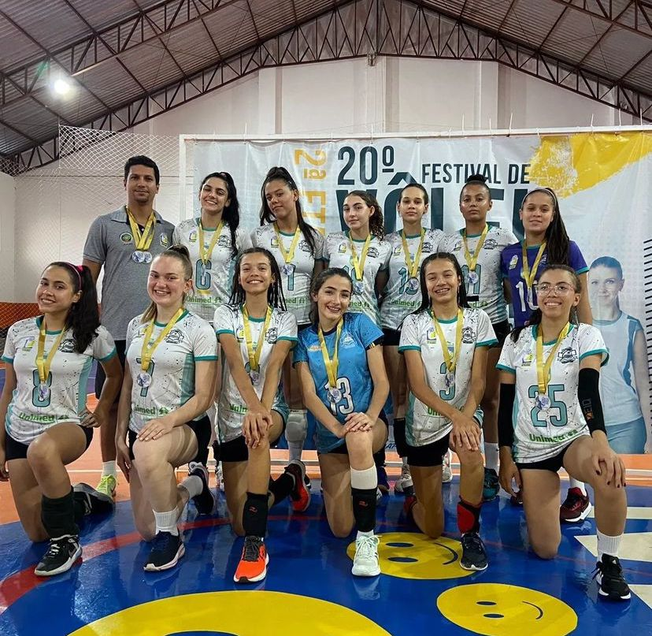
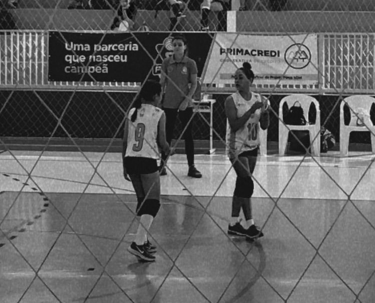
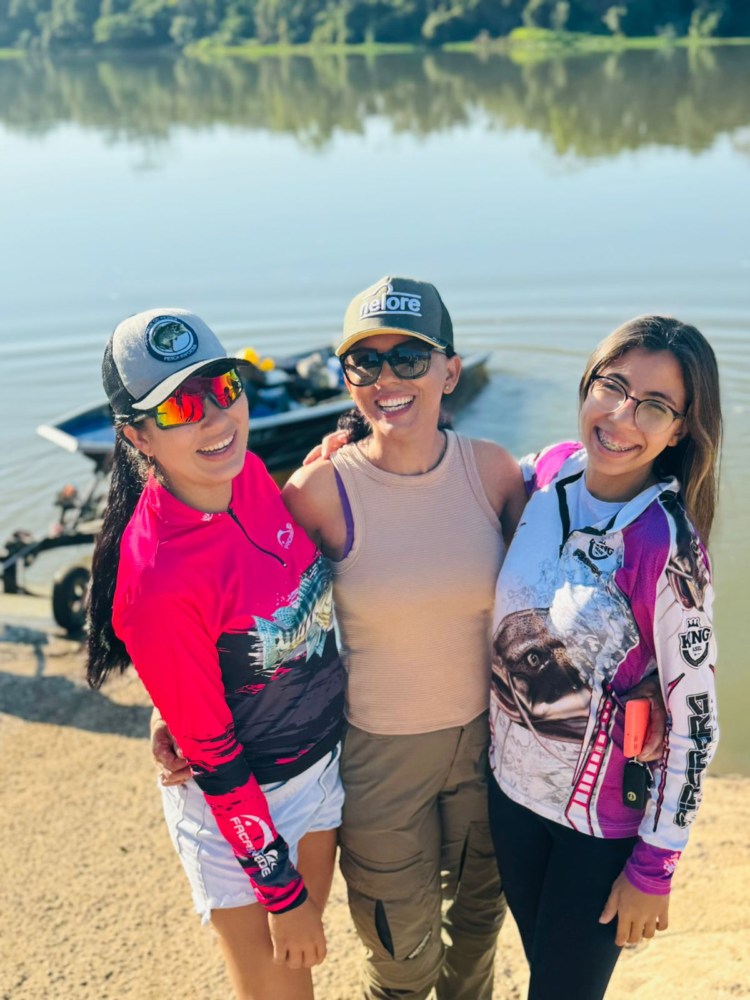

Minha historia no vôlei começo em 2016 e atualmente nao jogo mais em competições oficiais eceto no Jifro. tive que dar uma pausa no volei em 2021 por conta do covid-19 mais isso não me afeto muito e sim me ajudou. Logo após participei de varias competições em Sapezal, Primavera do Leste e Cacoal
Atualmente sei rodar em todas posições de 5x1 a 6x0 e também 4x2, ja tenho experiência de quadra, joguei de Capitã no jogos escolares. Minha maior experiência foi na AVV aprendi tudo la
Como todo atleta tive momentos dificeis torci o tornozelo e também ja machuquei meu joelho varias vezes mais isso não deixou eu ficar longe do meu esporte
Esse é um hobbie pesco desde que me conhço por gente minha familia criou umtradição de pescar então ja esta no sangue
As vezes não pegamos nada mais estar com a familia e a melhor parte ou muitas vezes pegamos e a melhor parte e o currasco e comida em abundancia